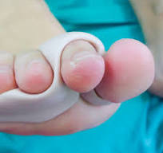
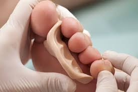

Las siliconas podológicas son usadas como tratamiento para muchas patologías de los dedos principalmente.
Las siliconas son materiales médicos que han pasado sus estrictos controles para dicho uso, siendo hipoalérgicos, por lo que no provocan alergias. Además, permite trabajar a medida, con técnica en directo, por lo que se adaptan a la perfección.
La silicona podológica nos permite trabajar como si fuera una “plastilina”, para realizar los tratamientos que consideremos adecuados en cada caso, de forma personalizada y moldeando directamente sobre el pie del paciente.
Las siliconas podológicas nos permiten solucionar o mejorar muchos problemas en los dedos de los pies, como:
- helomas o callos, callos ulcerados…
- también para corregir o mejorar deformaciones digitales como dedos en garra o hallux valgus (juanetes)
- sindactilias
- neuromas de morton
- dedos montados: infraductus, supraductus, etc.

Información sobre Ortesis de silicona
La silicona es un polímero perteneciente al grupo de los elastómeros que por sus características de elasticidad, resistencia y biocompatibilidad es utilizada en muchos tratamientos podológicos.
En muchas ocasiones una deformidad en los dedos o una lesión que se repite constantemente puede evitarse con el uso de una ortesis de silicona que modifique la forma del antepié o proteja una determinada zona.
Es importante destacar que una silicona confeccionada por un podólogo es adaptada a cada paciente para su morfología concreta, las siliconas estándar muchas veces molestan o no dan ningún resultado.
Cuando la deformidad del antepié es debido a la biomecánica una plantilla es más efectiva y más recomendable. Pero a la hora de proteger una zona, separar los dedos o frenar el avance de una deformidad en ellos, la silicona es resolutiva y cómoda.
Las ortesis de silicona son hidrófobas, lo que implica que el agua no deteriora la ortesis, también es antiadherente y elástica lo que las hace confortables a la hora de llevarlas.
Son hipoalergenicas y biocompatibles por lo que no producen reacciones alérgicas ni daños en los tejidos.

Recomendaciones de utilización de la ortesis de silicona:
- La utilización de la ortesis de silicona es de uso diurno, dentro del calzado y sujeta mediante el calcetín o media.
- La ortesis es única e intransferible, solo debe usarse en el pie para el que fue confeccionada.
- La prótesis de silicona debe lavarse tras su uso con jabón y agua templada. Secarla bien a temperatura ambiente y dejarla en una bolsa con talco.
- Es recomendable el uso de un zapato adecuado que albergue la ortesis de silicona correctamente sin causar molestias. Como calzado recomendamos horma ancha que contenga el pie pero sin comprimirlo, con una zona en el antepié lo suficientemente flexible para permitir movilidad.
- La ortesis se entrega en una bolsa de plástico con talco, y se empezará a usar al día siguiente.
- No debe exponerse al sol ni a temperaturas altas porque esto favorece su deterioro.
- La utilización debe ser permanente, le recomendamos su uso continuo y diurno, el abandono de su uso o no utilizarla lo suficiente compromete los efectos terapéuticos.
- La ortesis debe usarse con medias o calcetines. Si la ortesis se moviera mucho dentro del pie o molesta se debe abandonar su uso y es recomendable acudir al podólogo ya que es posible que exista una mala alineación de la ortesis o un mal uso del calzado.
- La ortesis puede estar sometida a cambios en su diseño según el progreso terapéutico, por lo que es importante acudir a la revisión.
- La ortesis no debe utilizarse bajo ningún concepto sobre las heridas ya que pueden ser dolorosas, agravarlas, provocar irritaciones y alergias.
- En caso de sudoración excesiva es aconsejable el suspender el uso ya que puede provocar cambios en la forma de andar y daños por irritaciones.
- Es hipoalérgica aunque en ocasiones cabe la posibilidad de la existencia de alguna reacción alérgica en caso de aparecer zonas rojas en el pie, picor o irritación es aconsejable retirar de la ortesis y acudir al podólogo.
- La ortesis tiene una duración aproximada de 6 meses a un año, siempre que se cumplan las recomendaciones indicadas de uso.